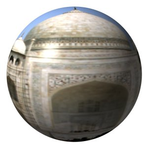

Figura 17.317. O filtro “Mapear objeto” aplicado a uma fotografia

Imagem original

Filter applied
Este filtro mapeia uma imagem para um objeto 3D (plano, esfera, caixa ou cilindro). Enquanto que esse filtro pode ser interessante para efeitos especiais rápidos, o GIMP não tem qualquer capacidade para criar imagens 3D para fins de produção: mesmo deixando o usuário controlar muito pouco do que é necessário num objeto 3D renderizado, esse filtro se torna um dos mais complexos dentro do GIMP, em tempos de opção, e um dos de execução mais demoradas. Se quiser controlar opções de iluminação realista numa imagem 2D, você pode usar esse filtro com a opção de de objeto “Plano”, mas ele é mais lento e menos completo que o filtro “Efeitos de Iluminação” no menu de Filtros->Luz e sombra. Se suas necessidades de 3D forem maiores, por favor procure o projeto “Blender 3D”, onde você pode fazer uso de imagens 2D criadas no GIMP como texturas, dentro de um programa completo de modelagem e animação. Ainda sobre esse filtro: ele funciona melhor apenas em imagens quadradas. Os objetos criados ficarão distorcidos em imagens retangulares.
![[Nota]](images/note.png)
|
Nota |
|---|---|
|
If the image is in grayscale mode or indexed mode, this menu entry is disabled. |
Esta pré-visualização tem várias possibilidades
- Pré-visualização!
-
A pré-visualização é automática para algumas das opções, mas você terá que pressionar este botão para atualizar a pré-visualização depois de modificar muitos dos outros parâmetros.
Quando o ponteiro do mouse estiver sobre a pé-visualização e a guia de Luz estiver selecionada, ele se torna uma pequena mão que pode pegar o ponto azul, que marca a posição da fonte de luz, e move-la. Esse ponto azul pode não estar visível: isso depende das configurações dos parâmetros X e Y na guia de Luz.
- Zoom de afastamento, Zoom de aproximação
-
Os botões de zoom permitem que você torne a imagem na pré-visualização mais próxima ou mais afastada. A sua ação é limitada, mas pode ser útil no caso de uma imagem grande.
- Show wireframe
-
Põe uma grade sobre a pré-visualização de forma que fique mais fácil criar deslocamentos e rotações. Funciona bem quando se está mapeando para um plano.
- Update preview live
-
To have preview working as usual.

- Mapear para
-
Esta lista permite que você escolha uma forma 3D a qual a imagem será mapeada. Pode ser um Plano, uma Esfera, uma Caixa ou um Cilindro.
- Fundo transparente
-
Esta opção deixa a imagem transparente ao redor do objeto. Se não for selecionada, o fundo será preenchido com a cor de fundo atual da caixa de Ferramentas.
- Ladrilhar a imagem fonte
-
Ao mover o objeto do tipo Plano e desloca-lo com as opões da guia de orientação, uma parte da imagem pode ficar vazia. Ao marcar a opção de Ladrilhar a imagem fonte, cópias da mesma serão colocadas para preencher o espaço vazio. Esta opção não tem efeito para os outros tipos de objeto.
Nota Esta opção funciona somente para objetos do tipo “Plano”.
- Criar nova imagem
-
When this option is checked, a new image is created with the result of the filter, preserving the original image.
- Create new layer
-
When this option is checked, a new layer is created with the result of the filter, leaving the original layer unchanged. This has no effect if Create new image is also checked.
- Antialiasing
-
Enabling this setting allows you to remove or reduce the aliasing effect that can show up on borders. When checked, this enables the following settings:
- Profundidade
-
Defines the anti-aliasing quality. A higher value gives better quality at the cost of being slower.
- Limiar
-
Defines anti-aliasing limits. Anti-aliasing stops when the value difference between pixels becomes lower than the value set here.

- Configurações para Luz
-
- Light source type
-
You can select among Point light, Directional light and No light.
- Light source color
-
Pressione o botão para abrir o diálogo seletor de cores.
- Posição
-
Se for escolhida a opção de “Luz puntiforme”, você pode controlar a Posição da fonte de luz (o ponto azul), usando as coordenadas X, Y, e Z (a direção do Z é para fora da tela).
Se for escolhida a “Luz direcional”, esses parâmetros X,Y, e Z “Controlam o vetor de direção” (o efeito não é evidente)

- Viewpoint Position
-
When Light Source Type is set to "Point Light", changing the X, Y, and Z values moves the "viewer" closer to or further from the object in those directions.
Note that this will not visually affect images set to "Plane" in the Map To field.
- First Axis, Second Axis
-
When Map To is set to "Plane", changing the X, Y, and Z values simulates the effect of tilting the plane on the Y and Z axes. This impacts how the Material tab settings affect the render.

- Posição
-
Esses três controles deslizantes e suas caixas de entrada permitem que você controle a posição do objeto dentro da imagem, de acordo com as coordenadas X, Y e Z do canto superior esquerdo do objeto.
- Rotação
-
Esses três controles fazem o objeto girar ao redor dos eixos X, Y ou Z, respectivamente.

- Níveis de intensidade
-
- Ambiente
-
Quantidade de cor a mostrar onde não incide luz diretamente.
- Difusão
-
Intensidade da cor original quando iluminada por uma fonte de luz.
- Reflexividade
-
- Difusão
-
Valores maiores fazem o objeto refletir mais luz (parece mais brilhante).
- Especular
-
Controle quanto intensas as áreas serão as áreas de reflexo.
- Reflexo brilhante
-
Valores mais altos tornam os reflexos mais focalizados (e portanto, menores).
This tab appears only when you select the Sphere object.

- Tamanho
-
- Raio
-
The radius ratio in comparison to the image size.
Esta aba aparece apenas se você selecionar o objeto do tipo Caixa.

- Map Images to Box Faces
-
Select an image for every face of the box. These images must be present on your screen when you call the Map Object filter.
- Scale X, Scale Y, Scale Z
-
Esses controles X, Y e Z permitem que você escolha o tamanho da caixa em cada direção.
Esta aba aparece apenas quando você seleciona o objeto do tipo Cilindro.

- Imagens para as faces das tampas
-
Select an image for every face of the cylinder. Images must be present on your screen when you call the Map Object filter.
- Tamanho
-
- Raio
-
Esse controle permite que você manipule o diâmetro do cilindro. Infelizmente, essa configuração atua na imagem mapeada no cilindro e faz uma re-amostragem da mesma para adapta-la ao novo tamanho do cilindro. Seria melhor ter a possibilidade de configurar o tamanho do cilindro antes do mapeamento, de forma que toda uma imagem pudesse ser mapeada.
- Cylinder length
-
Controla o comprimento do cilindro